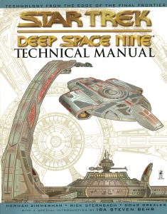

Star Trek Deep Space Nine Technical Manual |
|  |
| AUT | Herman Zimmerman Rick Sternbach Doug Drexler |
| PAG | 178 |
| EDI | Pocket Books, 1998 |
| ISBN | 0-671-01563-X |
C'era una volta un'installazione di raffinazione mineraria cardassiana
in orbita intorno al pianeta Bajor. Dopo il
ritiro cardassiano dallo spazio bajoriano, Terok Nor visse una seconda vita
quando passò sotto il controllo della Flotta Stellare. Con la scoperta di un
vicino tunnel spaziale stabile, la stazione, adesso chiamata Deep Space Nine,
è diventata il più importante avamposto dello spazio conosciuto.
Con centinaia di diagrammi e illustrazioni, questo volume rappresenta una
esaustiva guida alla tecnologia della Federazione, dei Cardassiani,
dei Bajoriani, dei Klingon,
dei Romulani e dei Jem'Hadar.
Il libro si chiude con quattro inserti colorati dedicati a un'analisi più
accurata della stazione e della Defiant.